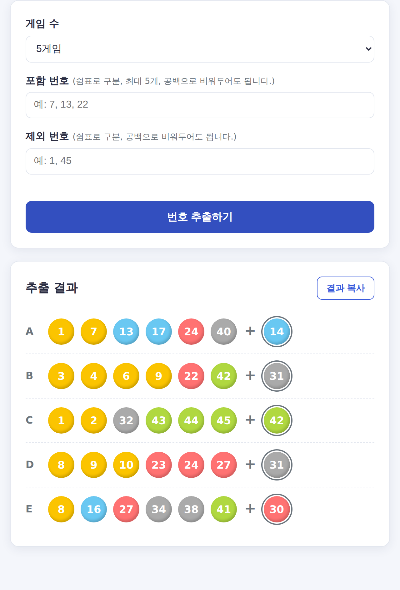

로또 번호 추출기 사용법 — 포함·제외 번호로 똑똑하게 뽑는 법
매주 직접 번호를 고민하기 번거롭다면 로또 번호 추출기로 빠르게 뽑아보세요. 단순 랜덤이 아니라 포함·제외 번호까지 설정할 수 있습니다.
🎱 로또 번호 추출기로 6개 번호 + 보너스 번호를 한 번에, 최대 5게임까지 생성하세요.

사용 방법
- 게임 수 선택 (1~5게임)
- 원하면 포함 번호·제외 번호 입력 (비워둬도 됩니다)
- 번호 추출하기 버튼 클릭 → 6개 번호 + 보너스 번호 생성
- 결과 복사로 손쉽게 저장
포함·제외 번호 활용법
- 포함 번호 — 평소 마음에 둔 번호(생일, 기념일 등)를 모든 게임에 고정
- 제외 번호 — 빼고 싶은 숫자를 지정해 추첨에서 제외
번호 색상의 의미
실제 로또처럼 구간별 색이 적용됩니다: 1~10 노랑, 11~20 파랑, 21~30 빨강, 31~40 회색, 41~45 초록. 보너스 번호는 테두리로 구분됩니다.
⚠️ 로또는 모든 번호의 당첨 확률이 동일한 완전 무작위 추첨입니다. 본 도구는 재미를 위한 것이며 당첨을 보장하지 않습니다.
자주 묻는 질문
Q. 추출된 번호는 당첨 확률이 더 높나요?
아니요. 어떤 방식으로 뽑든 각 번호 조합의 당첨 확률은 같습니다. 번호 선택의 수고를 덜어주는 도구로 활용하세요.
✅ 관련 계산기 — 로또 번호 추출기 · 로또 당첨금 실수령액 계산기